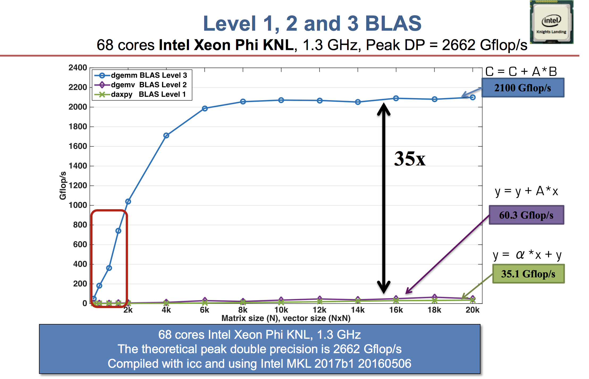
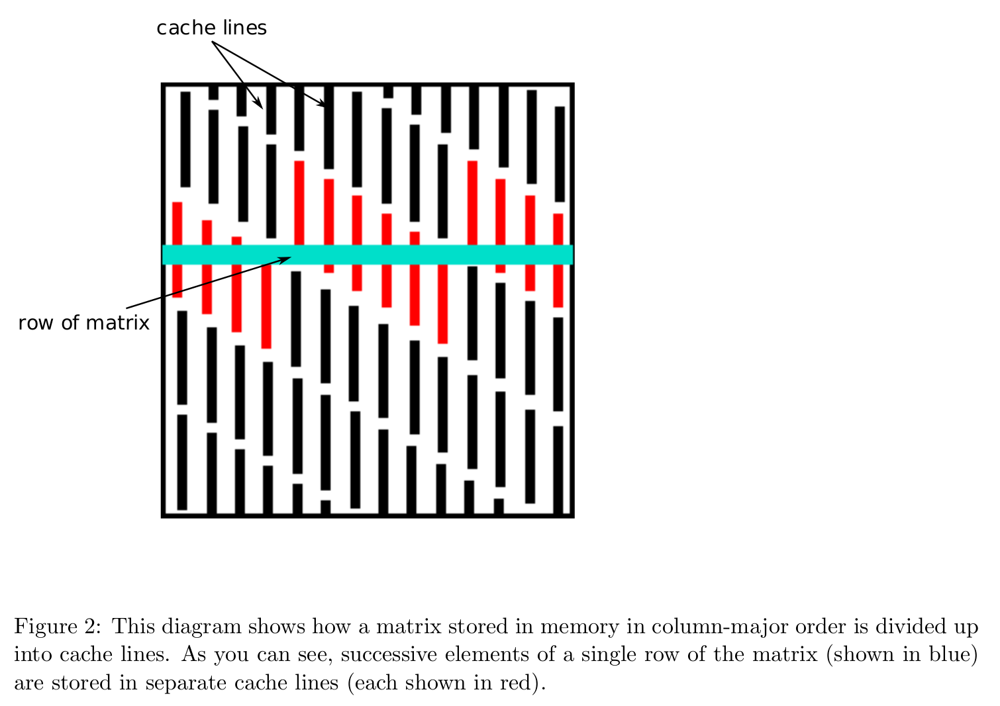

BLAS/LAPACK
Goals
- Be knowledgeable about BLAS/LAPACK as a critical backend for linear algebra in Julia, Python, and R.
- Understand BLAS Level-1, Level-2, and Level-3 operations and their performance characteristics.
- Understand interaction between memory allocation and flop counts in BLAS operations.
Packages
Topics in numerical linear algebra
- solve linear equations \(\mathbf{A} \mathbf{x} = \mathbf{b}\)
- regression computations \(\mathbf{X}^T \mathbf{X} \beta = \mathbf{X}^T \mathbf{y}\)
- eigen-problems \(\mathbf{A} \mathbf{x} = \lambda \mathbf{x}\)
- generalized eigen-problems \(\mathbf{A} \mathbf{x} = \lambda \mathbf{B} \mathbf{x}\)
- singular value decompositions \(\mathbf{A} = \mathbf{U} \Sigma \mathbf{V}^T\)
- iterative methods for numerical linear algebra
Except for the iterative methods, most of these numerical linear algebra tasks are implemented in the BLAS and LAPACK libraries. They form the building blocks of many statistical computing tasks (optimization, MCMC).
All high-level languages (Julia, Matlab, Python, R) call BLAS and LAPACK for numerical linear algebra. Julia offers the most flexibility by exposing interfaces to many BLAS/LAPACK subroutines directly. See documentation.
BLAS & LAPACK
HAIGH: BLAS provided portability performance and the ability to write structured code. I believe that was what Lawson said in his interview. He agrees with the advantages you’ve outlined. So in the case of the BLAS, people were prepared to add that extra layer of abstraction to get portability, neatness, and improved performance? KAHAN: It wasn’t even abstraction. It was just condensing the sizes of your codes and regularizing the names. If you have a BLAS that multiplies a matrix by a vector and adds a vector—you know, ax + b would really be the way you’d like to write it—but you can’t write it like that in the older versions of Fortran. You had to write out this damned loop. Everybody’s rewriting the same loops. What happens if people give names to subprograms that do this, so they don’t have to rewrite the same loops?
– Thomas Haigh interviewing William Kahan as part of an oral history for an ACM AM Turing Award.
BLAS stands for basic linear algebra subprograms.
Basic Linear Algebra Subprograms (BLAS)
- Netlib provides a reference implementation defining the required tasks and their interfaces.
- Mathematical Kernel Libraries (MKL)
- The default for MATLAB.
- Works on Windows, MacOS, Linux.
- Proprietary; guaranteed to work on Intel hardware only. Mixed results on AMD, but it appears the situation has improved as of 2022 as reported by Agner Fog.
- OpenBLAS
- Free, open source, and cross-platform.
- Default in R (except Apple silicon).
- Accelerate
- BLAS information; support in iOS and iPadOS.
- Default in R for Apple silicon (at least later versions).
- Contains additional libraries (including LAPACK).
LAPACK has many important routines for solving linear systems: solving eigenvalue problems, matrix decomposition/factorizations, singular value problems, estimating condition numbers.
Organization
There are 3 levels of BLAS functions.
There is support for various fields and precisions:
- S single precision
- D double precision
- C complex
- Z double complex
See Netlib’s quick-reference for a comprehensive list.
| Level | Example Operation | Name | Dimension | Flops |
|---|---|---|---|---|
| 1 | \(\alpha \gets \mathbf{x}^T \mathbf{y}\) | dot product | \(\mathbf{x}, \mathbf{y} \in \mathbb{R}^n\) | \(2n\) |
| 1 | \(\mathbf{y} \gets \mathbf{y} + \alpha \mathbf{x}\) | axpy | \(\alpha \in \mathbb{R}\), \(\mathbf{x}, \mathbf{y} \in \mathbb{R}^n\) | \(2n\) |
| 2 | \(\mathbf{y} \gets \mathbf{y} + \mathbf{A} \mathbf{x}\) | gaxpy | \(\mathbf{A} \in \mathbb{R}^{m \times n}\), \(\mathbf{x} \in \mathbb{R}^n\), \(\mathbf{y} \in \mathbb{R}^m\) | \(2mn\) |
| 2 | \(\mathbf{A} \gets \mathbf{A} + \mathbf{y} \mathbf{x}^T\) | rank one update | \(\mathbf{A} \in \mathbb{R}^{m \times n}\), \(\mathbf{x} \in \mathbb{R}^n\), \(\mathbf{y} \in \mathbb{R}^m\) | \(2mn\) |
| 3 | \(\mathbf{C} \gets \mathbf{C} + \mathbf{A} \mathbf{B}\) | matrix multiplication | \(\mathbf{A} \in \mathbb{R}^{m \times p}\), \(\mathbf{B} \in \mathbb{R}^{p \times n}\), \(\mathbf{C} \in \mathbb{R}^{m \times n}\) | \(2mnp\) |
These operations allow for evaluating and accumulating results of certain operations.
… Theoretically, matrix-matrix multiplication uses O(N^3) operations on O(N^2) data, so there is lots of opportunity for data reuse, meaning that you can get lots of cache and register reuse and therefore a very efficient algorithm. In fact, GEMM (General Matrix Multiply) is just about the only algorithm that gets close to peak performance of modern processors. …
— Victor Eijkhout replying to a Quora question
Examples
The form of a mathematical expression and the way the expression should be evaluated in actual practice may be quite different.
Some operations appear as level-3 but indeed are level-2.
Example 1
A common operation in statistics is column scaling or row scaling
\[
\begin{eqnarray*}
\mathbf{A} &=& \mathbf{A} \mathbf{D} \quad \text{(column scaling)} \\
\mathbf{A} &=& \mathbf{D} \mathbf{A} \quad \text{(row scaling)},
\end{eqnarray*}
\] where \(\mathbf{D}\) is diagonal. For example, in generalized linear models (GLMs), the Fisher information matrix takes the form
\[
\mathbf{X}^T \mathbf{W} \mathbf{X},
\] where \(\mathbf{W}\) is a diagonal matrix with observation weights on diagonal.
Column and row scalings are essentially level-2 operations!
2000×2000 Diagonal{Float64, Vector{Float64}}:
0.905651 ⋅ ⋅ ⋅ … ⋅ ⋅ ⋅
⋅ 0.630582 ⋅ ⋅ ⋅ ⋅ ⋅
⋅ ⋅ 0.455072 ⋅ ⋅ ⋅ ⋅
⋅ ⋅ ⋅ 0.856286 ⋅ ⋅ ⋅
⋅ ⋅ ⋅ ⋅ ⋅ ⋅ ⋅
⋅ ⋅ ⋅ ⋅ … ⋅ ⋅ ⋅
⋅ ⋅ ⋅ ⋅ ⋅ ⋅ ⋅
⋅ ⋅ ⋅ ⋅ ⋅ ⋅ ⋅
⋅ ⋅ ⋅ ⋅ ⋅ ⋅ ⋅
⋅ ⋅ ⋅ ⋅ ⋅ ⋅ ⋅
⋮ ⋱
⋅ ⋅ ⋅ ⋅ ⋅ ⋅ ⋅
⋅ ⋅ ⋅ ⋅ ⋅ ⋅ ⋅
⋅ ⋅ ⋅ ⋅ ⋅ ⋅ ⋅
⋅ ⋅ ⋅ ⋅ ⋅ ⋅ ⋅
⋅ ⋅ ⋅ ⋅ … ⋅ ⋅ ⋅
⋅ ⋅ ⋅ ⋅ ⋅ ⋅ ⋅
⋅ ⋅ ⋅ ⋅ 0.641342 ⋅ ⋅
⋅ ⋅ ⋅ ⋅ ⋅ 0.00363822 ⋅
⋅ ⋅ ⋅ ⋅ ⋅ ⋅ 0.2597992000×2000 Matrix{Float64}:
0.905651 0.0 0.0 0.0 … 0.0 0.0 0.0
0.0 0.630582 0.0 0.0 0.0 0.0 0.0
0.0 0.0 0.455072 0.0 0.0 0.0 0.0
0.0 0.0 0.0 0.856286 0.0 0.0 0.0
0.0 0.0 0.0 0.0 0.0 0.0 0.0
0.0 0.0 0.0 0.0 … 0.0 0.0 0.0
0.0 0.0 0.0 0.0 0.0 0.0 0.0
0.0 0.0 0.0 0.0 0.0 0.0 0.0
0.0 0.0 0.0 0.0 0.0 0.0 0.0
0.0 0.0 0.0 0.0 0.0 0.0 0.0
⋮ ⋱
0.0 0.0 0.0 0.0 0.0 0.0 0.0
0.0 0.0 0.0 0.0 0.0 0.0 0.0
0.0 0.0 0.0 0.0 0.0 0.0 0.0
0.0 0.0 0.0 0.0 0.0 0.0 0.0
0.0 0.0 0.0 0.0 … 0.0 0.0 0.0
0.0 0.0 0.0 0.0 0.0 0.0 0.0
0.0 0.0 0.0 0.0 0.641342 0.0 0.0
0.0 0.0 0.0 0.0 0.0 0.00363822 0.0
0.0 0.0 0.0 0.0 0.0 0.0 0.259799BenchmarkTools.Trial: 18 samples with 1 evaluation per sample. Range (min … max): 278.385 ms … 310.389 ms ┊ GC (min … max): 0.28% … 0.27% Time (median): 285.144 ms ┊ GC (median): 0.28% Time (mean ± σ): 285.627 ms ± 7.923 ms ┊ GC (mean ± σ): 0.30% ± 0.06% ███ █ ▁ ▁▁▁█ ▁ ▁ ▁ ▁ ███▁█▁▁▁▁▁█▁▁▁████▁▁█▁▁▁▁█▁▁▁▁▁█▁▁▁▁▁▁▁▁▁▁▁▁▁▁▁▁▁▁▁▁▁▁▁▁▁▁▁▁█ ▁ 278 ms Histogram: frequency by time 310 ms < Memory estimate: 30.53 MiB, allocs estimate: 3.
BenchmarkTools.Trial: 2024 samples with 1 evaluation per sample. Range (min … max): 1.754 ms … 3.826 ms ┊ GC (min … max): 0.00% … 27.16% Time (median): 2.464 ms ┊ GC (median): 17.60% Time (mean ± σ): 2.470 ms ± 374.702 μs ┊ GC (mean ± σ): 17.18% ± 9.50% ▁ ▁▂▄▄▄▃▆▇██▃▃▁ ▁ ▄▆▆▇▆▅▅▅▇▆▆▆▅▅█▇▆███████████████▇▇▆█▅▆▇▆▄▅▄▅▄▃▂▂▃▄▃▂▂▂▁▁▂▂▂ ▄ 1.75 ms Histogram: frequency by time 3.46 ms < Memory estimate: 30.53 MiB, allocs estimate: 3.
BenchmarkTools.Trial: 1968 samples with 1 evaluation per sample. Range (min … max): 1.747 ms … 4.888 ms ┊ GC (min … max): 0.00% … 37.04% Time (median): 2.428 ms ┊ GC (median): 15.28% Time (mean ± σ): 2.541 ms ± 410.907 μs ┊ GC (mean ± σ): 16.76% ± 8.97% ▃▅▆▄▇█▆▄▅▃ ▁▂▂▂▂▂▂▂▃▃▃▇▇███████████▇▅▄▅▄▄▃▃▃▃▃▃▃▃▃▃▃▃▃▃▂▂▂▂▃▃▂▂▂▃▂▁▁▂▁ ▃ 1.75 ms Histogram: frequency by time 3.78 ms < Memory estimate: 30.53 MiB, allocs estimate: 3.
BenchmarkTools.Trial: 9011 samples with 1 evaluation per sample. Range (min … max): 489.666 μs … 1.092 ms ┊ GC (min … max): 0.00% … 0.00% Time (median): 541.125 μs ┊ GC (median): 0.00% Time (mean ± σ): 554.578 μs ± 49.925 μs ┊ GC (mean ± σ): 0.00% ± 0.00% ▂▇█▅▅▄▅▆▅▅▄▃▂▂▂ ▄██████████████████▇▆▇▇▇█▆▇▆▅▆▆▆▅▅▆▆▆▆▅▄▄▄▄▃▃▃▃▃▂▂▂▂▂▂▁▂▂▂▁▁ ▄ 490 μs Histogram: frequency by time 695 μs < Memory estimate: 0 bytes, allocs estimate: 0.
BenchmarkTools.Trial: 4345 samples with 1 evaluation per sample. Range (min … max): 1.047 ms … 2.989 ms ┊ GC (min … max): 0.00% … 0.00% Time (median): 1.134 ms ┊ GC (median): 0.00% Time (mean ± σ): 1.151 ms ± 58.739 μs ┊ GC (mean ± σ): 0.00% ± 0.00% ▇█▇▆▅▄▄▃▃▃▄▄▄▄▃▂▂▁▁▁▁ ▂ █▆▄▆▆▆▆▇██▇▇▇██████████████████████████▇▆▇▅▄▅▆▅▄▅▄▅▁▃▅▆▁▄▃ █ 1.05 ms Histogram: log(frequency) by time 1.34 ms < Memory estimate: 0 bytes, allocs estimate: 0.
Example 2
The inner product between two matrices \(\mathbf{A}, \mathbf{B} \in \mathbb{R}^{m \times n}\) is often written as
\[ \text{trace}(\mathbf{A}^T \mathbf{B}), \text{trace}(\mathbf{B} \mathbf{A}^T), \text{trace}(\mathbf{A} \mathbf{B}^T), \text{ or } \text{trace}(\mathbf{B}^T \mathbf{A}). \] They appear as level-3 operation (matrix multiplication with \(O(m^2n)\) or \(O(mn^2)\) flops).
BenchmarkTools.Trial: 18 samples with 1 evaluation per sample. Range (min … max): 285.602 ms … 297.205 ms ┊ GC (min … max): 0.28% … 0.27% Time (median): 287.267 ms ┊ GC (median): 0.28% Time (mean ± σ): 288.660 ms ± 3.361 ms ┊ GC (mean ± σ): 0.28% ± 0.01% ▃ █ ▃ ▇▁█▇▇█▁▁█▇▇▁▁▁▁▇▁▁▁▁▁▁▁▁▁▁▁▁▁▁▇▁▇▁▁▁▁▇▁▁▁▁▁▁▁▁▇▁▁▁▁▁▁▁▁▁▁▁▁▁▇ ▁ 286 ms Histogram: frequency by time 297 ms < Memory estimate: 30.53 MiB, allocs estimate: 3.
But \(\text{trace}(\mathbf{A}^T \mathbf{B}) = \langle\text{vec}(\mathbf{A}), \text{vec}(\mathbf{B})\rangle\). The latter is level-1 BLAS operation with \(O(mn)\) flops.
BenchmarkTools.Trial: 7653 samples with 1 evaluation per sample. Range (min … max): 578.542 μs … 911.792 μs ┊ GC (min … max): 0.00% … 0.00% Time (median): 637.750 μs ┊ GC (median): 0.00% Time (mean ± σ): 653.126 μs ± 38.329 μs ┊ GC (mean ± σ): 0.00% ± 0.00% █▅▁ ▁▁▁▁▁▁▁▁▁▁▁▃████▆▅▄▄▄▄▄▄▄▄▃▃▃▂▂▃▂▂▂▂▂▂▂▂▂▁▂▁▂▁▁▁▁▁▁▁▁▁▁▁▁▁▁▁▁ ▂ 579 μs Histogram: frequency by time 789 μs < Memory estimate: 0 bytes, allocs estimate: 0.
Example 3
Similarly \(\text{diag}(\mathbf{A}^T \mathbf{B})\) can be calculated in \(O(mn)\) flops.
BenchmarkTools.Trial: 18 samples with 1 evaluation per sample. Range (min … max): 284.885 ms … 288.405 ms ┊ GC (min … max): 0.29% … 0.29% Time (median): 285.837 ms ┊ GC (median): 0.29% Time (mean ± σ): 286.071 ms ± 829.773 μs ┊ GC (mean ± σ): 0.29% ± 0.01% █ ▃ ▇▁▁▁▇▁▁▇▇▁▁▇▁▇▁█▁▇▁▁▇▁▁▁█▁▁▁▇▇▁▁▁▁▇▁▁▇▁▁▁▁▁▁▁▁▁▁▁▁▁▁▁▁▁▁▁▁▁▁▇ ▁ 285 ms Histogram: frequency by time 288 ms < Memory estimate: 30.55 MiB, allocs estimate: 6.
BenchmarkTools.Trial: 1426 samples with 1 evaluation per sample. Range (min … max): 2.519 ms … 98.181 ms ┊ GC (min … max): 0.00% … 96.98% Time (median): 3.517 ms ┊ GC (median): 19.34% Time (mean ± σ): 3.507 ms ± 2.583 ms ┊ GC (mean ± σ): 18.57% ± 11.86% ▁▃ ▁ ▁ ▁ ▁▁▄▃▁▄▃▁▄ ▃▅▄▃█▂▂▄▂▃▁ ▃▅▆████████████▆▆▆▇▄▃▃▃▃▂▅▆▇▆██████████████████████▆▄▅▃▂▄▂ ▅ 2.52 ms Histogram: frequency by time 4.26 ms < Memory estimate: 30.55 MiB, allocs estimate: 7.
To get rid of allocations for intermediate arrays we can just write a double loop or use the dot() function.
BenchmarkTools.Trial: 1901 samples with 1 evaluation per sample. Range (min … max): 2.602 ms … 2.993 ms ┊ GC (min … max): 0.00% … 0.00% Time (median): 2.615 ms ┊ GC (median): 0.00% Time (mean ± σ): 2.631 ms ± 44.453 μs ┊ GC (mean ± σ): 0.00% ± 0.00% █▇▆▇▅▄▄▃▃▂▂▂▁▂ ▁▁▁ ▁▁▁ ▁ ████████████████████████▇█▇▇█▇▆▅▄▅▇▄▄▁▄▅▅▅▅▁▄▅▄▁▅▁▅▅▄▄▅▄▄▅ █ 2.6 ms Histogram: log(frequency) by time 2.84 ms < Memory estimate: 0 bytes, allocs estimate: 0.
Level-3 fraction
Effective use of memory hierarchy is key to high performance. This is true on all architectures.
- Example: Intel Xeon X5650 CPU has a theoretical throughput of 128 double-precision Gigaflops (GFlops) but a maximum memory bandwidth of 32GB/s.
- Can we keep CPU cores busy with enough deliveries of matrix data and ship the results to memory fast enough to avoid backlog? Only if we can use high-level BLAS!
- Higher level BLAS (3 or 2) make more effective use of arithmetic logic units (ALU) by keeping them busy. Surface-to-volume effect.
| BLAS | Dimension | Mem. Refs. | Flops | Ratio |
|---|---|---|---|---|
| Level 1: \(\mathbf{y} \gets \mathbf{y} + \alpha \mathbf{x}\) | \(\mathbf{x}, \mathbf{y} \in \mathbb{R}^n\) | \(3n\) | \(2n\) | 3:2 |
| Level 2: \(\mathbf{y} \gets \mathbf{y} + \mathbf{A} \mathbf{x}\) | \(\mathbf{x}, \mathbf{y} \in \mathbb{R}^n\), \(\mathbf{A} \in \mathbb{R}^{n \times n}\) | \(n^2\) | \(2n^2\) | 1:2 |
| Level 3: \(\mathbf{C} \gets \mathbf{C} + \mathbf{A} \mathbf{B}\) | \(\mathbf{A}, \mathbf{B}, \mathbf{C} \in\mathbb{R}^{n \times n}\) | \(4n^2\) | \(2n^3\) | 2:n |

Source: Jack Dongarra’s slides.
- A distinction between LAPACK and LINPACK (older version of R uses LINPACK) is that LAPACK makes use of higher level BLAS as much as possible (usually by smart partitioning) to increase the so-called level-3 fraction (ratio of data access operations to flops in level-3 algorithms).
- To appreciate the efforts in an optimized BLAS implementation such as OpenBLAS (evolved from GotoBLAS), see this video.
Respecting memory layout
Both R and Julia implement a column-major ordering of matrix data. This means columns represent contiguous chunks of memory which are easy to pack into caches.

Whenever possible, you should access data in the format preferred by your computing language. We demonstrate this with matrix multplication:
\[ \mathbf{C} \leftarrow \mathbf{C} + \mathbf{A}\mathbf{B} \qquad \mathbf{A} \in \mathbb{R}^{m \times p}, \mathbf{B} \in \mathbb{R}^{p \times n}, \mathbf{C} \in \mathbb{R}^{m \times n}. \]
Implementing this operation requires 3 loops. Depending on the data access pattern, there are 6 possible variants:
The following code implements fast (but not BLAS-fast) algorithms for matrix multiplication:
"""
matmul_by_loop!(A, B, C, order)
Overwrite `C` by `A * B`. `order` indicates the looping order for triple loop.
"""
function matmul_by_loop!(A::Matrix, B::Matrix, C::Matrix, order::String)
m = size(A, 1)
p = size(A, 2)
n = size(B, 2)
fill!(C, 0)
if order == "jki"
@inbounds for j = 1:n, k = 1:p, i = 1:m
C[i, j] += A[i, k] * B[k, j]
end
end
if order == "kji"
@inbounds for k = 1:p, j = 1:n, i = 1:m
C[i, j] += A[i, k] * B[k, j]
end
end
if order == "ikj"
@inbounds for i = 1:m, k = 1:p, j = 1:n
C[i, j] += A[i, k] * B[k, j]
end
end
if order == "kij"
@inbounds for k = 1:p, i = 1:m, j = 1:n
C[i, j] += A[i, k] * B[k, j]
end
end
if order == "ijk"
@inbounds for i = 1:m, j = 1:n, k = 1:p
C[i, j] += A[i, k] * B[k, j]
end
end
if order == "jik"
@inbounds for j = 1:n, i = 1:m, k = 1:p
C[i, j] += A[i, k] * B[k, j]
end
end
end
Random.seed!(123)
m, p, n = 2000, 100, 2000
A = rand(m, p)
B = rand(p, n)
C = zeros(m, n);BenchmarkTools.Trial: 93 samples with 1 evaluation per sample. Range (min … max): 53.742 ms … 55.222 ms ┊ GC (min … max): 0.00% … 0.00% Time (median): 54.121 ms ┊ GC (median): 0.00% Time (mean ± σ): 54.174 ms ± 226.291 μs ┊ GC (mean ± σ): 0.00% ± 0.00% █ ██▄▄ ▄▄ ▆ ▆▁▁▁▁▆▄▄▄▄▆▄▄▆█▄▄████▆██▆▁█▄█▄█▆█▄▁▁█▁▆▄▁▁▁▄▁▁▄▁▁▄▁▄▁▁▁▁▁▁▁▄ ▁ 53.7 ms Histogram: frequency by time 54.9 ms < Memory estimate: 0 bytes, allocs estimate: 0.
BenchmarkTools.Trial: 73 samples with 1 evaluation per sample. Range (min … max): 67.876 ms … 70.542 ms ┊ GC (min … max): 0.00% … 0.00% Time (median): 68.769 ms ┊ GC (median): 0.00% Time (mean ± σ): 68.852 ms ± 561.550 μs ┊ GC (mean ± σ): 0.00% ± 0.00% ▄ █▄▁ ▁█▄▄ ▁█▁▁█▄▄▄▄ ▁ ▁ ▆▆▁▆▁▆▆▁▁▆█▆███▁████▆█████████▆█▁▁▁▁▁▁▁█▁▁▁▁▆▆▆▁▁▆▁▁▆▁▁▆▁▆▆▆ ▁ 67.9 ms Histogram: frequency by time 70.2 ms < Memory estimate: 0 bytes, allocs estimate: 0.
BenchmarkTools.Trial: 11 samples with 1 evaluation per sample. Range (min … max): 458.113 ms … 460.395 ms ┊ GC (min … max): 0.00% … 0.00% Time (median): 458.965 ms ┊ GC (median): 0.00% Time (mean ± σ): 459.017 ms ± 734.192 μs ┊ GC (mean ± σ): 0.00% ± 0.00% ███ █ █ █ █ █ █ █ █ ███▁▁▁▁▁▁▁▁█▁▁▁▁█▁▁▁▁▁█▁▁▁▁▁▁▁▁▁▁█▁▁█▁█▁▁█▁▁▁▁▁▁▁▁▁▁▁▁▁▁▁▁▁▁█ ▁ 458 ms Histogram: frequency by time 460 ms < Memory estimate: 0 bytes, allocs estimate: 0.
BenchmarkTools.Trial: 339 samples with 1 evaluation per sample. Range (min … max): 14.465 ms … 15.728 ms ┊ GC (min … max): 0.00% … 0.00% Time (median): 14.732 ms ┊ GC (median): 0.00% Time (mean ± σ): 14.759 ms ± 141.270 μs ┊ GC (mean ± σ): 0.00% ± 0.00% ▂▃▃▄▃ ▄▃█▅▂▂▂ ▂ ▃▁▃▁▃▁▃▃▅▆█████████████▇██▇▆▅▅▅▅▄▃▃▄▃▃▃▃▁▃▃▄▃▃▁▁▃▃▁▃▁▁▁▁▁▁▁▃ ▄ 14.5 ms Histogram: frequency by time 15.3 ms < Memory estimate: 0 bytes, allocs estimate: 0.
BenchmarkTools.Trial: 335 samples with 1 evaluation per sample. Range (min … max): 14.535 ms … 16.358 ms ┊ GC (min … max): 0.00% … 0.00% Time (median): 14.753 ms ┊ GC (median): 0.00% Time (mean ± σ): 14.947 ms ± 470.621 μs ┊ GC (mean ± σ): 0.00% ± 0.00% ▅▇█▄▄▃ ▃▆████████▆▅▄▃▃▂▃▂▃▃▂▃▃▂▃▁▂▃▁▃▂▃▁▃▃▁▁▁▁▁▂▁▂▂▂▃▃▃▁▃▂▅▃▃▃▃▂▂▂▃ ▃ 14.5 ms Histogram: frequency by time 16.3 ms < Memory estimate: 0 bytes, allocs estimate: 0.
Avoiding Memory Allocation
Transpose is an expensive memory operation
In R, the command
will first transpose A then perform matrix multiplication, causing unnecessary memory allocation.
Julia avoids transposing a matrix whenever possible. The Transpose type only creates a view of the transpose of matrix data.
(Ptr{Float64}(0x0000000151300000), Ptr{Float64}(0x0000000151300000))BenchmarkTools.Trial: 10000 samples with 1 evaluation per sample. Range (min … max): 113.584 μs … 3.293 ms ┊ GC (min … max): 0.00% … 94.90% Time (median): 124.417 μs ┊ GC (median): 0.00% Time (mean ± σ): 129.598 μs ± 33.254 μs ┊ GC (mean ± σ): 0.24% ± 0.95% ██▇▆▆▅▄▄▃▃▂▂▃▂▂▂▃▂▂▂▂▂▂▂▂▂▁▂▂▂▁▁▁▁ ▁▁▁ ▂ ▆▅▄▂▃▂▄▃▄▆█████████████████████████████████████████████▇█▇▇▇ █ 114 μs Histogram: log(frequency) by time 162 μs < Memory estimate: 8.06 KiB, allocs estimate: 3.
BenchmarkTools.Trial: 10000 samples with 1 evaluation per sample. Range (min … max): 121.416 μs … 170.042 μs ┊ GC (min … max): 0.00% … 0.00% Time (median): 122.292 μs ┊ GC (median): 0.00% Time (mean ± σ): 124.903 μs ± 6.604 μs ┊ GC (mean ± σ): 0.00% ± 0.00% █▇▅▅▄▃▃▃▃▂▁▁ ▁ ███████████████████▇▇██▇█▇███▇▇▇▆▇▇▇▇▇▇▆▇▇▇▆▆▆▆▆▆▅▆▆▆▆▅▆▅▆▄▅▅ █ 121 μs Histogram: log(frequency) by time 155 μs < Memory estimate: 0 bytes, allocs estimate: 0.
BenchmarkTools.Trial: 10000 samples with 1 evaluation per sample. Range (min … max): 117.833 μs … 348.666 μs ┊ GC (min … max): 0.00% … 0.00% Time (median): 127.083 μs ┊ GC (median): 0.00% Time (mean ± σ): 130.966 μs ± 11.003 μs ┊ GC (mean ± σ): 0.00% ± 0.00% ▄█ ▄▂▁▁ ▂▂▂▁██▇▇██████▇▆▅▅▄▄▄▄▃▃▃▃▃▃▃▃▃▃▃▃▃▃▃▃▃▃▃▃▃▂▂▂▂▂▂▂▂▂▂▃▃▂▃▂▂▂▃ ▃ 118 μs Histogram: frequency by time 166 μs < Memory estimate: 0 bytes, allocs estimate: 0.
Broadcast (dot operation) fuses loops and avoids memory allocation
Broadcasting in Julia achieves vectorized code without creating intermediate arrays.
Suppose we want to calculate element-wise maximum of absolute values of two large arrays. In R or Matlab, the command
creates two intermediate arrays and then a final array to store results.
In Julia, dot operations are fused. No intermediate arrays are created in many instances (but not all of them).
BenchmarkTools.Trial: 6507 samples with 1 evaluation per sample. Range (min … max): 207.000 μs … 2.752 ms ┊ GC (min … max): 0.00% … 74.33% Time (median): 601.208 μs ┊ GC (median): 0.00% Time (mean ± σ): 768.275 μs ± 358.863 μs ┊ GC (mean ± σ): 21.45% ± 22.44% ▅▇█▇▅▄▃▂ ▁▃▃▃▃▃▂▂▂▂▂▁▁▁ ▂ ▃▃▁▁▁▁▁▁▁██████████▆▆▁▁▁▁▁▁▁▁▅▇▇████████████████▇▇▇▆▅▅▄▅▅▄▅▅▅ █ 207 μs Histogram: log(frequency) by time 2.06 ms < Memory estimate: 7.66 MiB, allocs estimate: 3.
Pre-allocating a results array gets rid of memory allocations.
BenchmarkTools.Trial: 10000 samples with 1 evaluation per sample. Range (min … max): 205.375 μs … 318.250 μs ┊ GC (min … max): 0.00% … 0.00% Time (median): 219.084 μs ┊ GC (median): 0.00% Time (mean ± σ): 222.586 μs ± 10.035 μs ┊ GC (mean ± σ): 0.00% ± 0.00% ████▇▄ ▂▁▂▁▁▁▁▁▂▇██████▇▆▅▅▄▄▄▄▄▄▃▃▃▃▃▃▃▃▃▃▃▃▃▂▂▂▂▂▂▂▂▂▂▂▂▂▂▂▂▂▂▂▂▂▂ ▃ 205 μs Histogram: frequency by time 264 μs < Memory estimate: 0 bytes, allocs estimate: 0.
Obsessively managing memory allocations in your code is unlikely to improve performance, and worse yet, will rob you of the benefits of working with a dynamic language like Julia.
- If your program spends most of its time doing matrix-matrix multiplication with large dimensions, pre-allocation costs may be negligible.
- If your program spends most of its time doing scalar operations or “small” matrix/vector operations, the cost of “simple” operations matters a lot.
- If you’re not sure where your code operates along these extremes, profile it!
Chris Rackaukas has a detailed blog post on this topic.
Views
View avoids creating extra copy of matrix data.
BenchmarkTools.Trial: 10000 samples with 1 evaluation per sample. Range (min … max): 22.792 μs … 1.037 ms ┊ GC (min … max): 0.00% … 92.59% Time (median): 47.708 μs ┊ GC (median): 0.00% Time (mean ± σ): 58.346 μs ± 85.803 μs ┊ GC (mean ± σ): 19.13% ± 12.06% ▅▅█▄▁ ▁ ███████▅▁▁▁▁▁▁▁▁▁▁▁▁▁▁▁▁▁▁▁▁▁▁▁▁▁▁▁▁▁▁▁▁▁▁▁▁▁▁▃▁▃▁▅▅▅▆▆▆▅▅▆ █ 22.8 μs Histogram: log(frequency) by time 662 μs < Memory estimate: 512.08 KiB, allocs estimate: 3.
BenchmarkTools.Trial: 10000 samples with 1 evaluation per sample. Range (min … max): 42.000 μs … 2.229 ms ┊ GC (min … max): 0.00% … 0.00% Time (median): 44.875 μs ┊ GC (median): 0.00% Time (mean ± σ): 52.605 μs ± 60.044 μs ┊ GC (mean ± σ): 0.00% ± 0.00% █▆▄▂▁ ▁ ███████▇▇▇▆▆▆▇▅▆▅▆▅▅▅▅▅▄▅▄▅▅▅▅▃▅▅▅▃▄▄▄▄▃▅▅▄▄▂▅▂▅▄▃▄▄▄▃▃▃▃▂▂ █ 42 μs Histogram: log(frequency) by time 217 μs < Memory estimate: 0 bytes, allocs estimate: 0.
The @views macro can be useful in some operations.
BenchmarkTools.Trial: 10000 samples with 1 evaluation per sample. Range (min … max): 39.250 μs … 203.458 μs ┊ GC (min … max): 0.00% … 0.00% Time (median): 42.291 μs ┊ GC (median): 0.00% Time (mean ± σ): 42.867 μs ± 3.552 μs ┊ GC (mean ± σ): 0.00% ± 0.00% ▇█▂ ▁▂▂▁ ▁▁ ▁ ▇▆▁▁▁▃▄▄▁▃▄▅▅███▇█████████▇█▇█▇▇▇▇▇▇▇▇▇▇▇▆▇▆▆▆▆▆▇▆▅▇▆▆▅▅▅▅▅▅ █ 39.2 μs Histogram: log(frequency) by time 52.1 μs < Memory estimate: 0 bytes, allocs estimate: 0.
The Pre-Allocation Pattern
Pre-allocating buffers for intermediate quantities or outputs can significantly impact performance (but not always!). As such, it is common to see Julia functions for out-of-place and in-place implementations.
- Out-of-Place: Implementation has allocations for output. Usually just copies the input in some way.
- In-Place: Implementation has no allocations for output. Usually mutates the input in some way.
- Allocation-Free: No allocations whatsover. Type-stable + all required buffers are allocated by the caller.
See for example sort() vs sort!() in Julia.
Takeaway
Use good algorithms and reuse data wherever possible!
- When possible, frame your problem in terms of linear algebra and specifically high-level BLAS operations.
- Good code should be mindful about algorithms; this means having some understanding of complexity and interactions with hardware.
- In Julia: we can work very low level (e.g.
BLAS.gemm(...)), high level (e.g.C = A*B), or somewhere in between (e.g.mul!(C, A, B)). - In R: No direct control over memory, have to trust the language. We can still be mindful about memory usage; e.g. reuse data and avoid allocations like
t(X)whenever possible.